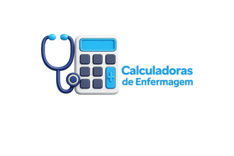

1. Mapear
Use o Mapa do edital para saber exatamente o que está dentro do escopo e marcar seu estado.

As 24 questões de SUS + Específicos concentram 84 dos 100 pontos. Português e legislação continuam necessários, mas devem funcionar como manutenção sistemática.
O hub foi desenhado para transformar o edital em decisões de estudo: mapear, aprofundar, recuperar, medir e corrigir.
Use o Mapa do edital para saber exatamente o que está dentro do escopo e marcar seu estado.
Faça revisão ativa e mantenha um caderno de erros. Releitura isolada não fecha lacunas.
Converta acertos em pontos ponderados e monitore sua distância da linha mínima de 50/100.
Para Enfermeiro, o edital estabelece margem de 150 candidatos na lista geral, com regras próprias para listas reservadas, e exige no mínimo 50% do total de pontos. Os habilitados seguem para a Prova de Títulos.
Cada card corresponde a um núcleo de estudo derivado do conteúdo programático oficial. Clique em “Abrir roteiro” para ver subitens e o contrato editorial de 10 capítulos.
O plano usa manutenção semanal para Português/Legislação e concentra carga nos blocos que somam 84 pontos. Ajuste a intensidade à sua disponibilidade; a ordem não substitui diagnóstico individual.
Use 25 minutos para teoria ou questões e 5 minutos para registrar erros. O cronômetro roda apenas enquanto esta página estiver aberta.
Seu progresso é salvo apenas neste navegador. Use “Revisado” e “Dominado” para consolidar tópicos e o caderno abaixo para registrar falhas recorrentes.
Registre o conceito confundido, por que errou e qual regra/critério corrige o raciocínio.
Informe quantas questões você acertou em cada área. O cálculo aplica os pesos oficiais e mostra a pontuação em 100.
Somente após a habilitação na objetiva. A pontuação de títulos é somada à prova objetiva para a classificação final, com limite máximo de 10 pontos.
As datas abaixo são as previstas/publicadas no edital e na página do IBAM. Sempre confira novas publicações antes de tomar qualquer decisão.
O edital é a fonte do escopo da prova. Para legislação e normas profissionais, priorize o texto oficial/consolidado e evite estudar letra de lei por resumo secundário.
Cópias locais do edital e da rerratificação para consulta offline.
| Camada | Documento | Uso no hub |
|---|---|---|
| Canônica | Edital 74/2026 – SEPLA-RH | Vaga, remuneração, prova, pesos, habilitação e conteúdo programático. |
| Atualização | Edital 82/2026 – SEPLA-RH | Rerratificação do Anexo VII; mantidas as demais informações segundo o próprio ato. |
| Não aplicável ao cargo | Edital 73/2026 | Mantido apenas como evidência da auditoria dos links recebidos; não alimenta o mapa de Enfermeiro. |